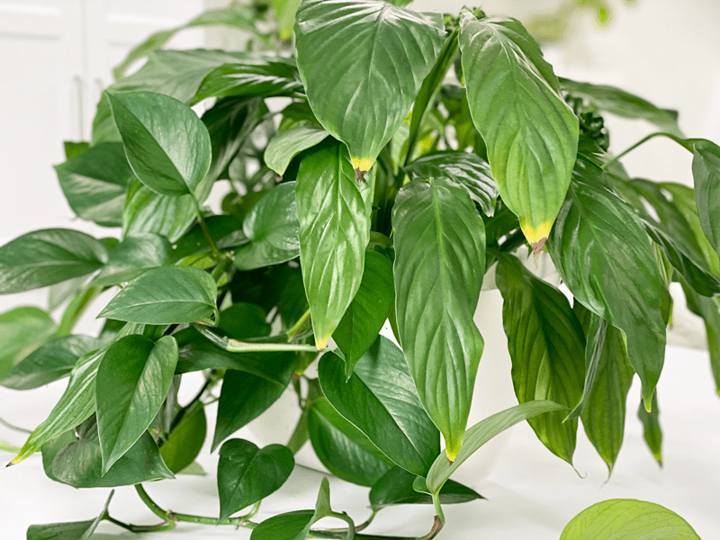
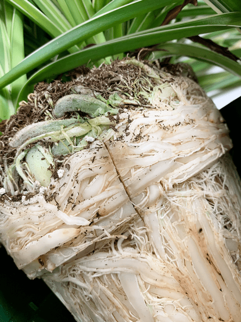
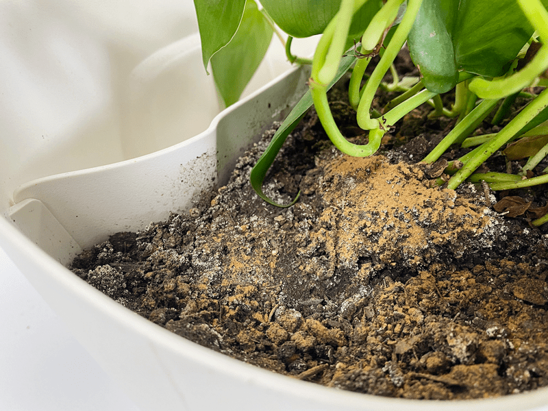

Master List of Houseplant Troubleshooting
Now, what’s wrong with this plant?! Do you ever have those moments when you just throw your hands in the air? Just when you think you understand a plant, its watering needs, finding the right spot for light, humidity, and temperature–now the leaves are yellowing, dropping, or getting brown tips. You may wonder, What am I doing wrong? Whether you are a novice or a beginner, plant issues can be overwhelming.
Today, I have put together a list of possible plant issues. I also have individual posts on specific plants that talk about what to watch for and the telltale signs that the plant is in distress, so be sure to check those out as well. But feel free to frequent this page when you need to do detective work.

Keep in mind diagnosing problems of indoor plants can be challenging. It takes time and a bit of detective work.
Indoor Houseplant Leaf Issues
Sudden Loss of Leaves
Sudden loss of leaves is frequently caused by insufficient light, soil that is too wet, or dry or cold drafts. Plants may not grow as well in a certain spot during the winter as they did during the summer. You may have to move your plants to a spot that has more light. As you can see, several factors come into play. Troubleshoot them one by one.
What causes a sudden loss of leaves?
- Sudden loss of leaves can be caused by a rapid temperature change.
- Another cause of sudden leaf loss is prolonged exposure to hot or cold drafts, dry air, exposure to gas or furnace fumes, or changing the plant from a sunny to a dark location.
- The soil may be too wet or dry.
Solution
- Relocate the plant to space that is free from cold or hot drafts.
- Check the soil to see if it is too wet or too dry–adjust accordingly. If the soil is too dry, allow the soil to dry out before watering again. Research what the requirements are for the plant in need and adjust the watering schedule.

Brown Leaf Tips
What causes brown tips on plant leaves?
- If your plant has brown leaf tips, it can be a sign of low humidity or that the soil has been dry for too long. The humidity level in the average home is often below 30 percent, yet most houseplants, even desert dwellers such as cacti, prefer humidity levels of at least 40 percent. Many require 60 percent or more.
- Another possibility is dry soil–not just periodic dryness, but a continual lack of timely watering.
Solution
- Start by double-checking to make sure that you have the plant on a proper watering schedule. Adjust as needed.
- Humidity: Try boosting the humidity with a room humidifier or relocating the plant to a more humid room such as a well-lit bathroom. Some people fill a tray with pebbles and add water. You can also try moving the plant closer in with other ones.
Black Tips on Leaves
Several factors can cause black leaf tips on indoor plants. While the damage can sometimes be stopped and prevented on other leaves, the tips cannot be restored to their healthy color. Careful attention to the plants’ environment during all phases of the day will help to identify the problem and point to a solution to prevent a recurrence.
What causes black tips on the leaves?
- Lack of water: If the plant’s roots are experiencing drought due to lack of moisture in the soil or low ambient humidity, the leaf tips often will be the first to show this stress by darkening.
- High ambient heat or sun: High ambient temperatures, use of space heaters, or too much direct sunlight can cause blackened leaf tips on plants.
- A chemical buildup in the soil: Common chemical compounds such as chlorine and fluoride in tap water, or excess fertilizer salts, can cause discoloration of leaf tips if they build up in the soil.
Solution
- Lack of water: Keeping the soil moist and raising the humidity with a humidifier or evaporation tray under the plant can help to boost overall moisture in the air.
- High ambient heat or sun: Keeping plants out of direct sunlight at the hottest part of the day and lowering ambient temperatures, or moving the plant into a location with bright, indirect light may help to manage the problem.
- A chemical buildup in the soil: Leaching the compounds out of soil periodically by deep, prolonged watering and thorough drainage of the soil can wash the excess compounds out of the soil. Repotting in fresh soil also can improve the condition.
Brown, Dry Spots on Leaves
- This problem is probably due to inconsistent watering. If the soil dries out too much, the tips of the leaves will present with brown tips and spots.
- Solution: Be consistent with your watering, but water only when needed. Check your plants about every 7 to 10 days and remember that our homes are often hot and dry in the winter, so plants may need to be watered more often.
Brown Edges on Leaves
- Brown edges on a leaf can be a sign of chlorine and/or fluoride in the tap water or a buildup of salts within the soil.
- Solution: Fill your watering can with tap water and allow it to sit uncovered for at least 24 hours so that the chlorine and fluoride can evaporate. Another option is to use rainwater or distilled water instead.
There are white deposits on the pot near the drain holes.
- If you notice an accumulation of white deposits on the outside of the pot, this is a sign of excess salts.
- Solution: Use rainwater or distilled water to flush out excess salt.
Small Brown Spots Rimmed with Yellow
- If you spot this happening on your plant, it may have a leaf spot disease. The attacking fungus or bacteria causes small brown spots rimmed with yellow, where it’s feeding on the leaves. These spots may vary in shape, color, and size.
- Solution: Immediately remove the affected leaves and isolate from your other plants for the time being. To treat leaf spot disease, try this homemade remedy of putting a tablespoon or two of baking soda and a teaspoon or two of mineral oil in a spray bottle of water. Shake the solution well and then spray all areas of the plant that are infected with brown spots.
Curling Leaves
-
- Curling leaves are a sign that the plant has been exposed to cold temperatures.
- Solution: Avoid putting the plant being near cold drafts, windowsills, doorways, and air conditioners.
Unnaturally Small, Pale Leaves
- Unnaturally small, pale leaves and spindly plants are most generally the result of insufficient light.
- This is especially common during the winter or when outdoor or greenhouse-grown plants are brought into the home.
- Small leaves also might indicate a need for fertilizer.
Brown Leaf Tips and Edges
- Brown leaf tips and edges can be caused by improper watering, insect feeding injury, salt accumulations, objects rubbing against the leaves, or exposure to hot, dry air.
- Water that is chlorinated or which contains added or natural amounts of fluoride can harm sensitive plants.
- Perlite (the white material in many potting mixes) and fertilizer products containing fluoride may release enough fluoride to harm sensitive plants. Spider plants, especially the variegated variety, are susceptible to fluoride and often are seen with leaf-tip burn. Occasionally flushing the soil should help reduce a fluoride salt buildup.
Bleached or Faded Spots on Leaves
- Bleached or faded spots on leaves sometimes are caused by direct sunlight burning plants that require shade or are not yet accustomed to extended periods of direct sunlight.
- Chemicals and plant-cleaning products also can injure leaves.
Plant Leaf Distortion
- Plant distortion (leaf thickening, leaf curling, leaf and flower drop) accompanied by leaf yellowing and browning may be due to gas fumes or pesticides that are toxic to the plant. Plants are very sensitive to gases and will show symptoms before the gas concentration is at a level detectable to humans.
- Garden soil that is contaminated with agricultural chemicals and used for potting houseplants can result in chemical injury to houseplants.
Indoor Houseplant Root Issues

Root Bound
What causes a plant to be root bound?
- Plants, by their nature, are meant to grow in the ground and spread out their roots, but we humans often have other ideas for plants. We take them from their natural habitat and put them in a pot so we can grow them indoors! In a pot, the confined root system of a plant can become root bound if care is not taken to prevent this.
- In short, a root-bound plant is just that, a plant whose roots are “bound” by some kind of barrier.
What to look for
- Look at the bottom of the grow pot. Are there roots coming through the drain hole? If so, this is a sign that the plant may be root-bound.
- Other signs of a plant struggling with its roots are that the plants may wilt quickly, may have yellow or brown leaves (especially near the bottom of the plant), and may have stunted growth.
- A severely root-bound plant may also have a container that is distorted (pushed out of shape) or cracked by the pressure of the roots.
- The roots may be showing above the soil.
- Remove the plant from the pot and check the roots. Are they wrapping and circling the base of the pot? See my spider plant roots? That is an excellent picture of a plant that is root-bound! Yikes.
Solution
- Transplant the plant into a 1-2″ larger pot. Doing this will not only give your plant’s roots room to stretch out, but it will also provide some new, fresh soil. If you use too large a pot, it will have too much excess soil that will allow water to collect rather than drain, and that will result in the roots sitting in damp conditions, which will cause the roots to begin to rot.
- Before repotting, make efforts to untangle the roots with your fingers before replanting it. Tease the root ball into a loose bundle of hair-like roots bristling out from the plant; these roots will reach out and find their way into the surrounding soil.
- NOTE: Any time you transplant, your plant can go into “shock.” They demonstrate this with wilting leaves. Give it some time, love, water, nourishment, and light. It will bounce back.
Root Rot
What causes root rot?
- Root rot is most often the result of a plant that is overwatered.
- Another cause of root rot is when a plant is grown in too large a pot.
- Root rot can also happen when a pot doesn’t have adequate drainage.
What to look for.
- If you suspect a root rot problem, remove the root-ball and check the roots.
- Healthy roots will be white or cream-colored.
- Rotted roots are brown-black and may appear slimy.
- Severely rotted roots may be hollow and easily broken between the thumb and index fingers.
Solution.
- Sadly, you might have to dispose of a plant that suffers from root rot; it depends on the severity.
- Plants with just a stem or small part of the plant with root rot may be salvaged by pruning out the rotted part.
- A plant with root rot may be a candidate for rooting stem cuttings of unaffected shoots.

Soil Issues with Indoor Houseplants
I shared a photo up above of some soil that has some white, crusty-looking substance. Don’t mind the brown/golden powder; that’s just cinnamon, which I use for fungus gnat control. Let’s discuss what this white stuff may be telling us.
White Substances on the Soil Surface
What to look for
- White substances on the soil surface may indicate two things. If crusty or crystalline, the substance probably is an accumulation of high soluble salts. Salt deposits may be visible on the outsides of clay pots as well.
- High soluble salts are caused by the excessive use of fertilizers, frequent applications of fertilizer, and the incorrect use of a fertilizer concentrate.
- Hard water can also cause a salt buildup.
- A white or light yellow mold-like growth may indicate the presence of a saprophytic soil fungus. Overwatering the plant, poor drainage, and old or contaminated potting soil encourage saprophytic fungus, which feeds on the decaying organic matter in soggy soil.
Solution
- The crusty surface layer of soil can be removed and replaced with fresh soil, but it’s essential to get to the bottom of the issues, because high salts can cause yellowing and decay of the roots.
- Fertilize only when your plants are actively growing, and use a dilute solution–about one fourth to one half the recommended rate–when fertilizing.
- If you have hard water, find a different water source.
- If the plant has excessive salts, the soil can be flushed by irrigating it with clear water. Allow the water to run out the bottom of the pot, and repeat the several irrigations with a volume at least that of the pot size.
- If saprophytic soil fungus is the issue, there are several steps one can take to manage this issue. Remove the top layer of white fungus by scraping it off (or replace the soil), monitor proper watering schedules, so the plant doesn’t sit waterlogged, make sure the bottom of the pot has drainage holes, and make sure you are using the right potting soil for the plant in question.
The Water Runs Straight Through the Soil
If you know you are giving a plant plenty of water and that it’s not root-bound (two common reasons for plants to dry out), it may be an issue with your soil. A lot of potting soils use peat, which holds water well when it is moistened, but is difficult to wet the first time thoroughly.
Even if it has been moistened well in the past, leaving the plant unwatered when you go on vacation or forgetting to water it regularly can dry out the soil, and it won’t absorb the water well. Small pots can be submerged in lukewarm water to remoisten the peat in the soil. It’s more challenging to do that with large pots.
Unusual Houseplant Behavior
The Plant is Stretching
What causes a plant to start stretching?
- If your plant has suddenly grown awkwardly tall or long or perhaps sends out spindly stems reaching towards the light source, it’s trying to tell you that it needs more light.
Solution
- Move the plant closer to a window or switch it to another window that gets more light.
- South-facing windows tend to be the brightest, north-facing windows offer the least light, and east and west windows fall somewhere in between.
- It’s important to rotate your plants so that all sides of the plant get equal access to the sun and to prevent your plant from growing lopsided.
That’s a wrap for now. I am sure this list will continue to grow as I encounter more plant issues. But let’s hope not! Please leave a comment below and have a blessed day. amie sue
© AmieSue.com